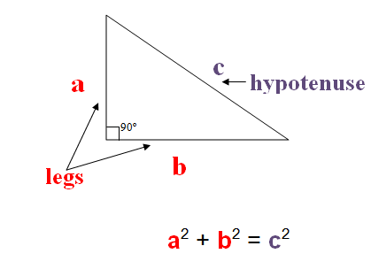
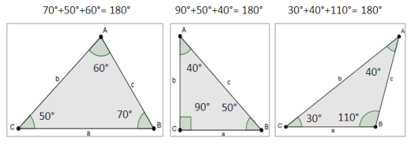
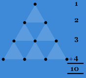

 Pythagoras is known for the theorm known as the Pythagorean Theorm. This proved that for any right-angled triangle, the length of the longest side of the triangle, known as the hypotenuse, squared is equal to the sum of the other sides squared. It is often known as the equation: a2+b2=c2. With the Pythagorean Theorm, Pythagorean Triples such as a (3,4,5) triangle, or a (5,12,13) triangle patterns can be made. Pythagoras did not discover the proof, but rather gave the theorem its form.
The Pythagorean Theorem also allows you to prove Irrational Numbers exist. It allows you to prove mathematically that no ratio of Natural Numbers (1,2,3,ect.) can produce the square root of two.
Pythagoras, and his followers, also discovered that the sum of the angles in any triangle adds up to 180o. 
 Pythagoras believed that "10" was the perfect number. Ten is a triangular number composed of the sum of one, two, three and four. Ten provided a symbolic meaning to the Pythagoreans.
Pythagoras is also attributed to solving equations using geometry. As well as constructing the first three regualar solids: tetrahedron, cube, and octahedron.
Pythagoras also made contributions to astronomy. Pythagoras viewed the Earth as the center of the Universe. With this he believed that planets, stars and the universe were all spherical. His reasoning behind the shape is due to the fact that the most perfect solid figure is a sphere. Pythagoras also thought that the orbits planets took were circular.